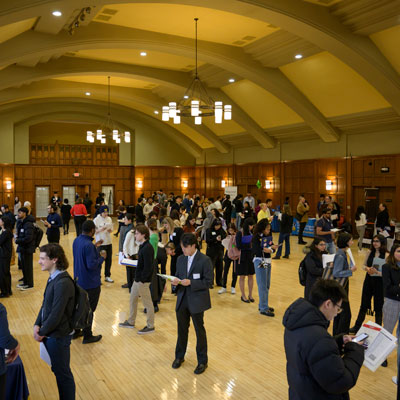
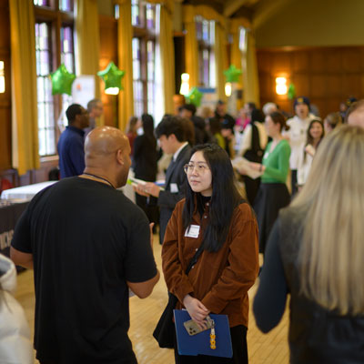

Your success starts here
Interviews are a vital step in landing internships, jobs, and research opportunities. At the University of Michigan, we provide resources to help you practice and build confidence. This page focuses on behavioral interviews, one of the most common interview formats.
What Are Behavioral Interviews?
- Purpose: Employers use them to understand how you handled past experiences
- Common Question: Questions often begin with “Tell me about a time when…”
- Focuses: Focuses on teamwork, leadership, problem-solving, and adaptability
-
Learn more about behaviral interviews Click Here
STAR Method
- Situation: Describe the context
- Task: Explain your responsibility
- Action: Detail the steps you took
- Result: Share the outcome
-
Learn more about star method Click Here
Practice Resources
- Mock Interview: Schedule a mock interview through the Career Center
- Workshops: Attend workshops to practice answering behavioral questions
- Record Yourself: Record yourself and review your responses for improvement
-
Schedule a mock interview Click Here
Common Behavioral Questions
- Mentorship: Tell me about a time you worked in a team.
- Alumini: Describe a situation where you faced a challenge and how you overcame it.
- Valuable Experience: Give an example of when you showed leadership.
More behavioral interview resources Click Here
You Got this!
With preparation and practice, you’ll be ready to shine in any interview. Good luck, and Go Blue! 💙💛